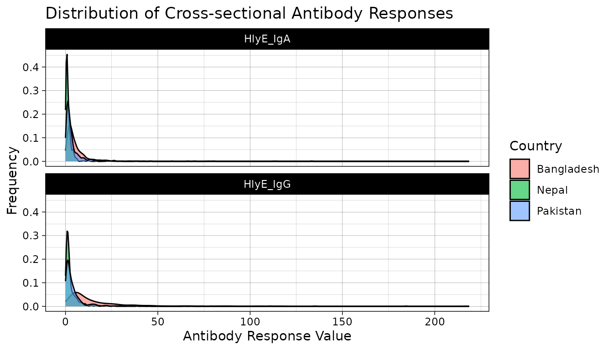
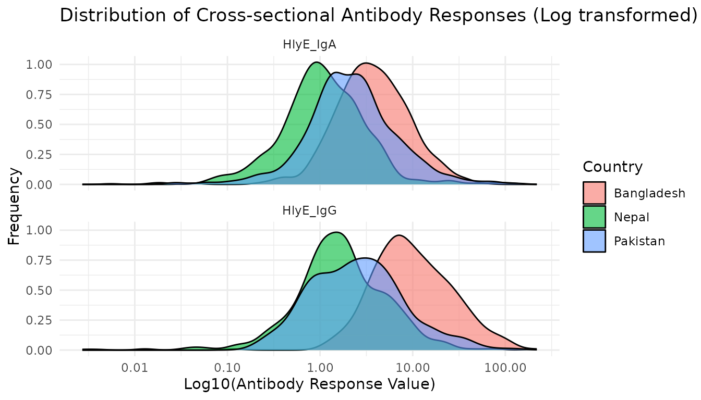
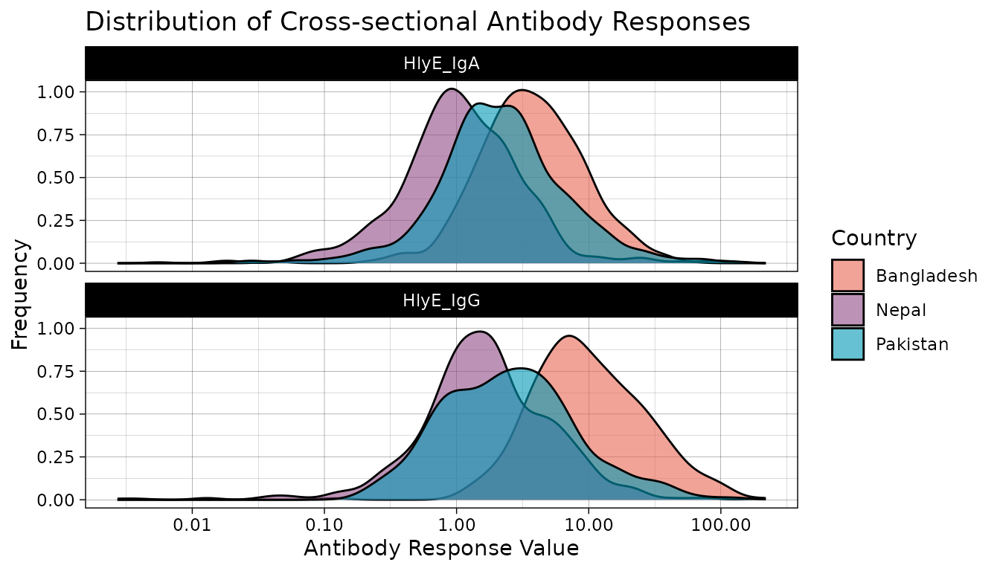
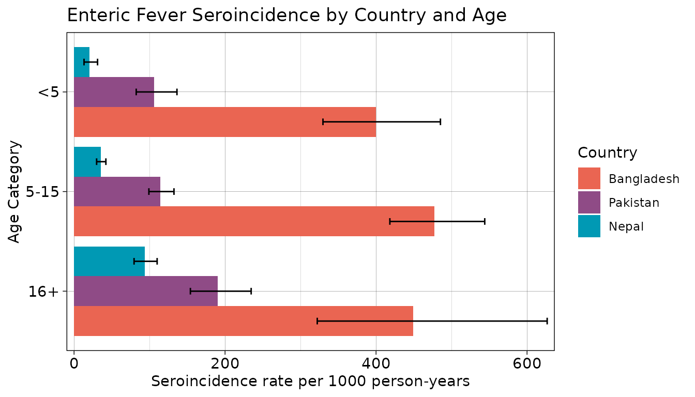
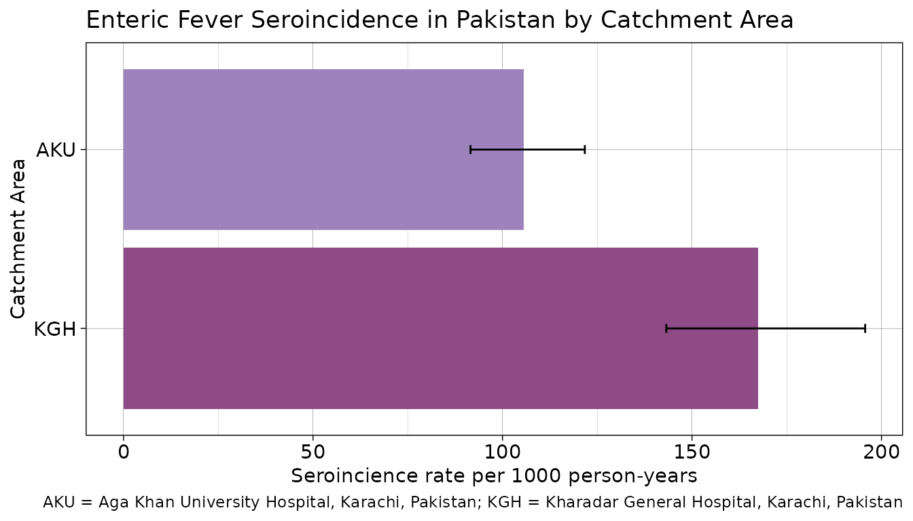

Enteric Fever Seroincidence Vignette
UC Davis Seroepidemiology Research Group (SERG)
Source:vignettes/articles/enteric_fever_example.Rmd
enteric_fever_example.RmdIntroduction
This vignette provides users with an example analysis using the serocalculator package by reproducing the analysis for: Estimating typhoid incidence from community-based serosurveys: a multicohort study (Aiemjoy et al. (2022)). We review the methods underlying the analysis and then walk through an example of enteric fever incidence in Pakistan. Note that because this is a simplied version of the analysis, the results here will differ slightly from those presented in the publication.
In this example, users will determine the seroincidence of enteric fever in cross-sectional serosurveys conducted as part of the the SeroEpidemiology and Environmental Surveillance (SEES) for enteric fever study in Bangladesh, Nepal, and Pakistan. Longitudinal antibody responses were modeled from 1420 blood culture-confirmed enteric fever cases enrolled from the same countries.
Load packages
The first step in conducting this analysis is to load our necessary packages. If you haven’t installed already, you will need to do so before loading.
# devtools::install_github("ucd-serg/serocalculator", eval=FALSE)
library(serocalculator)
#install.packages("tidyverse")
library(tidyverse)Load data
Pathogen-specific sample datasets, noise parameters, and longitudinal antibody dynamics for serocalculator are available on the Serocalculator Repository on Open Science Framework (OSF). We will pull this data directly into our R environment.
Note that each dataset has specific formatting and variable name requirements.
Load and prepare longitudinal parameter data
We will first load the longitudinal curve parameters to set the antibody decay parameters. In this example, these parameters were modeled with Bayesian hierarchical models to fit two-phase power-function decay models to the longitudinal antibody responses among confirmed enteric fever cases.
Formatting Specifications: Data should be imported as a “wide” dataframe with one column for each parameter and one row for each iteration of the posterior distribution for each antigen isotype. Column names must exactly match follow the naming conventions:
| Column Name | Description |
|---|---|
| y0 | Baseline antibody concentration |
| y1 | Peak antibody concentration |
| t1 | Time to peak antibody concentration |
| alpha | Antibody decay rate |
| r | Antibody decay shape |
Note that variable names are case-sensitive
# Import longitudinal antibody parameters from OSF
curves <-
"https://osf.io/download/rtw5k/" %>%
load_curve_params()Load and prepare cross-sectional data
Next, we load our sample cross-sectional data. We will use a subset of results from the SEES dataset. Ideally, this will be a representative sample of the general population without regard to disease status. Later, we will limit our analysis to cross-sectional data from Pakistan.
We have selected hemolysin E (HlyE) as our target antigen and IgG and IgA as our target immunoglobulin isotypes. Users may select different serologic markers depending on what is available in your data. From the original dataset, we rename our result and age variables to the names required by serocalculator.
Formatting Specifications: Cross-sectional population data should be a “long” dataframe with one column for each variable and one row for each antigen isotype resulted for an individual. So the same individual will have more than one row if they have results for more than one antigen isotype. The dataframe can have additional variables, but the two below are required:
| Column Name | Description |
|---|---|
| value | Quantitative antibody response |
| age | Numeric age |
Note that variable names are case sensitive
#Import cross-sectional data from OSF and rename required variables
xs_data <-
"https://osf.io/download//n6cp3/" %>%
load_pop_data() Check formatting
We can check that xs_data has the correct formatting
using the check_pop_data() function:
xs_data %>% check_pop_data()
#> data format is as expected.Summarize antibody data
We can compute numerical summaries of our cross-sectional antibody
data with a summary() method for pop_data
objects:
xs_data %>% summary()
#>
#> n = 3336
#>
#> Distribution of age:
#>
#> Min. 1st Qu. Median Mean 3rd Qu. Max.
#> 0.60 5.00 10.00 10.53 15.00 25.00
#>
#> Distributions of antigen-isotype measurements:
#>
#> antigen_iso Min 1st Qu. Median 3rd Qu. Max # NAs
#> 1 HlyE_IgA 0 0.9810911 2.123017 5.000199 218.6229 0
#> 2 HlyE_IgG 0 0.9810911 2.123017 5.000199 218.6229 0Visualize antibody data
We examine our cross-sectional antibody data by visualizing the distribution of quantitative antibody responses. Here, we will look at the distribution of our selected antigen and isotype pairs, HlyE IgA and HlyE IgG, across participating countries.
#color pallette
country.pal <- c('#EA6552', '#8F4B86','#0099B4FF')
#Create plots
xs_data %>% autoplot(strata = "Country",type='density') +
scale_fill_manual(values = country.pal)
We see that across countries, our data is highly skewed with the majority of responses on the lower end of our data with long tails. Let’s get a better look at the distribution by log transforming our antibody response value.
# Create log transformed plots
xs_data %>%
autoplot(strata = "Country", log = TRUE,type='density') +
scale_fill_manual(values = country.pal)
xs_data %>%
autoplot(strata = "Country", type='density') +
scale_fill_manual(values = country.pal) +
scale_x_log10(labels = scales::label_comma())
#> Warning in scale_x_log10(labels = scales::label_comma()): log-10
#> transformation introduced infinite values.
#> Warning: Removed 18 rows containing non-finite outside the scale range
#> (`stat_density()`).
Once log transformed, our data looks much more normally distributed. In most cases, log transformation will be the best way to visualize serologic data.
Let’s also take a look at how antibody responses change by age.
#Plot antibody responses by age
ggplot(data=xs_data, aes(x=age, y=value, color=Country)) +
geom_point(size=.6, alpha=.7)+
geom_smooth(method=lm, se=FALSE)+
scale_y_log10() +
theme_linedraw()+
labs(
title = "Quantitative Antibody Responses by Age",
x = "Age",
y = "Value"
) +
scale_color_manual(values = country.pal)
#> Warning in scale_y_log10(): log-10 transformation introduced infinite values.
#> log-10 transformation introduced infinite values.
#> Warning: Removed 18 rows containing non-finite outside the scale range
#> (`stat_smooth()`).
In this plot, a steeper slope indicates a higher incidence. We can see that the highest burden is in Bangladesh. Nepal has a slightly higher incidence in the older group (higher slope).
Load noise parameters
Next, we must set conditions based on some assumptions about the data and errors that may need to be accounted for. This will differ based on background knowledge of the data.
The biological noise, \(\nu\) (“nu”), represents error from cross-reactivity to other antibodies. Measurement noise, \(\varepsilon\) (“epsilon”), represents error from the laboratory testing process.
Formatting Specifications: Noise parameter data should be a dataframe with one row for each antigen isotype and columns for each noise parameter below.
| Column Name | Description |
|---|---|
| y.low | Lower limit of detection of the antibody assay |
| nu | Biologic noise |
| y.high | Upper limit of detection of the antibody assay |
| eps | Measurement noise |
Note that variable names are case-sensitive.
Estimate Seroincidence
Now we are ready to begin estimating seroincidence. We will conduct
two separate analyses using two distinct functions,
est.incidence and est.incidence.by, to
calculate the overall seroincidence and the stratified seroincidence,
respectively.
Overall Seroincidence
Using the function est.incidence, we filter to sites in
Pakistan and define the datasets for our cross-sectional data
(pop_data), longitudinal parameters (curve_param), and noise parameters
(noise_param). We also define the antigen-isotype pairs to be included
in the estimate (antigen_isos). Here, we have chosen to use two antigen
isotypes, but users can add additional pairs if available.
# Using est.incidence (no strata)
est1 <- est.incidence(
pop_data = xs_data %>% filter(Country == "Pakistan"),
curve_param = curves,
noise_param = noise %>% filter(Country == "Pakistan"),
antigen_isos = c("HlyE_IgG", "HlyE_IgA")
)
#> Warning: `llik()` was deprecated in serocalculator 1.0.0.
#> ℹ Please use `log_likelihood()` instead.
#> ℹ The deprecated feature was likely used in the serocalculator package.
#> Please report the issue to the authors.
#> This warning is displayed once every 8 hours.
#> Call `lifecycle::last_lifecycle_warnings()` to see where this warning was
#> generated.
#> Warning: `fdev()` was deprecated in serocalculator 1.0.0.
#> ℹ Please use `f_dev()` instead.
#> ℹ The deprecated feature was likely used in the serocalculator package.
#> Please report the issue to the authors.
#> This warning is displayed once every 8 hours.
#> Call `lifecycle::last_lifecycle_warnings()` to see where this warning was
#> generated.
summary(est1)
#> # A tibble: 1 × 10
#> est.start incidence.rate SE CI.lwr CI.upr coverage log.lik iterations
#> <dbl> <dbl> <dbl> <dbl> <dbl> <dbl> <dbl> <int>
#> 1 0.1 0.128 0.00682 0.115 0.142 0.95 -2376. 4
#> # ℹ 2 more variables: antigen.isos <chr>, nlm.convergence.code <ord>Stratified Seroincidence
We can also produce stratified seroincidence estimates. Let’s compare estimates across all countries.
#Using est.incidence.by (strata)
est_country = est.incidence.by(
strata = c("Country"),
pop_data = xs_data,
curve_params = curves,
noise_params = noise,
antigen_isos = c("HlyE_IgG", "HlyE_IgA"),
num_cores = 8 # Allow for parallel processing to decrease run time
)
#> Warning in count_strata(., strata_varnames): The number of observations in `data` varies between antigen isotypes, for at least one stratum. Sample size for each stratum will be calculated as the minimum number of observations across all antigen isotypes.
#> Warning in warn.missing.strata(data = curve_params, strata = strata %>% : curve_params is missing all strata variables, and will be used unstratified.
#>
#> To avoid this warning, specify the desired set of stratifying variables in the `curve_strata_varnames` and `noise_strata_varnames` arguments to `est.incidence.by()`.
#> Warning in check_parallel_cores(.): This computer appears to have 4 cores
#> available. `est.incidence.by()` has reduced its `num_cores` argument to 3 to
#> avoid destabilizing the computer.
summary(est_country)
#> Seroincidence estimated given the following setup:
#> a) Antigen isotypes : HlyE_IgG, HlyE_IgA
#> b) Strata : Country
#>
#> Seroincidence estimates:
#> # A tibble: 3 × 13
#> Stratum Country n est.start incidence.rate SE CI.lwr CI.upr coverage
#> <chr> <chr> <int> <dbl> <dbl> <dbl> <dbl> <dbl> <dbl>
#> 1 Stratum… Bangla… 401 0.1 0.451 0.0235 0.407 0.499 0.95
#> 2 Stratum… Nepal 760 0.1 0.0482 0.00278 0.0431 0.0540 0.95
#> 3 Stratum… Pakist… 494 0.1 0.128 0.00682 0.115 0.142 0.95
#> # ℹ 4 more variables: log.lik <dbl>, iterations <int>, antigen.isos <chr>,
#> # nlm.convergence.code <ord>We are warned that “curve_params is missing all strata variables, and will be used unstratified”. This can be ignored, as the unstratified parameters will simply give us the overall seroincidence estimate.
Let’s visualize our seroincidence estimates by strata.
# Plot seroincidence estimates
#Save summary(est2) as a dataframe and sort by incidence rate
est_countrydf<- summary(est_country) %>%
arrange(incidence.rate)
#Create barplot (rescale incidence rate and CIs)
ggplot(est_countrydf, aes(y=reorder(Country,incidence.rate), x=incidence.rate*1000, fill=Country)) +
geom_bar(stat = "identity", show.legend = FALSE) +
geom_errorbar(aes(xmin =CI.lwr*1000, xmax=CI.upr*1000, width=.05))+
labs(
title= "Enteric Fever Seroincidence by Country",
x="Seroincidence rate per 1000 person-years",
y="Country"
) +
theme_linedraw() +
theme(axis.text.y = element_text(size=11),
axis.text.x = element_text(size=11)) +
scale_x_continuous(expand = c(0,10)) +
scale_fill_manual(values = country.pal)
Users can select any stratification variable in their cross-sectional population dataset. For example, we can also stratify by catchment area within Pakistan.
#Using est.incidence.by (strata)
est2 = est.incidence.by(
strata = c("catchment"),
pop_data = xs_data %>% filter(Country == "Pakistan"),
curve_params = curves,
noise_params = noise %>% filter(Country == "Pakistan"),
antigen_isos = c("HlyE_IgG", "HlyE_IgA"),
num_cores = 8 #Allow for parallel processing to decrease run time
)
#> Warning in warn.missing.strata(data = curve_params, strata = strata %>% : curve_params is missing all strata variables, and will be used unstratified.
#>
#> To avoid this warning, specify the desired set of stratifying variables in the `curve_strata_varnames` and `noise_strata_varnames` arguments to `est.incidence.by()`.
#> Warning in warn.missing.strata(data = noise_params, strata = strata %>% : noise_params is missing all strata variables, and will be used unstratified.
#>
#> To avoid this warning, specify the desired set of stratifying variables in the `curve_strata_varnames` and `noise_strata_varnames` arguments to `est.incidence.by()`.
#> Warning in check_parallel_cores(.): This computer appears to have 4 cores
#> available. `est.incidence.by()` has reduced its `num_cores` argument to 3 to
#> avoid destabilizing the computer.
summary(est2)
#> Seroincidence estimated given the following setup:
#> a) Antigen isotypes : HlyE_IgG, HlyE_IgA
#> b) Strata : catchment
#>
#> Seroincidence estimates:
#> # A tibble: 2 × 13
#> Stratum catchment n est.start incidence.rate SE CI.lwr CI.upr
#> <chr> <chr> <int> <dbl> <dbl> <dbl> <dbl> <dbl>
#> 1 Stratum 1 aku 294 0.1 0.106 0.00767 0.0916 0.122
#> 2 Stratum 2 kgh 200 0.1 0.167 0.0133 0.143 0.196
#> # ℹ 5 more variables: coverage <dbl>, log.lik <dbl>, iterations <int>,
#> # antigen.isos <chr>, nlm.convergence.code <ord>
#Plot seroincidence estimates
#Save summary(est2) as a dataframe
est2df<- summary(est2) %>%
mutate(catchment = factor(catchment, levels = c("kgh", "aku"), labels = c("KGH", "AKU")))
# Create barplot (rescale incidence rate and CIs)
ggplot(est2df, aes(y = catchment, x = incidence.rate * 1000, fill = catchment)) +
geom_bar(stat = "identity", show.legend = FALSE) +
geom_errorbar(aes(xmin = CI.lwr * 1000, xmax = CI.upr * 1000, width = .05)) +
labs(
title= "Enteric Fever Seroincidence in Pakistan by Catchment Area",
x="Seroincience rate per 1000 person-years",
y="Catchment Area",
caption = "AKU = Aga Khan University Hospital, Karachi, Pakistan; KGH = Kharadar General Hospital, Karachi, Pakistan"
) +
theme_linedraw() +
theme(axis.text.y = element_text(size=11),
axis.text.x = element_text(size=11)) +
scale_x_continuous(expand = c(0,10)) +
scale_fill_manual(values = c("#8F4B86", "#9D83BC"))
Conclusions
We find that Bangladesh has the highest overall seroincidence of enteric fever with a rate of 451 per 1000 person-years, as well as the highest seroincidence by age category. In comparison, Nepal has a seroincidence rate over 9 times lower than that of Bangladesh (48 per 1000 person-years) and the lowest age-specific seroincidence rates of the three countries in the study. serocalculator provides an efficient tool to conduct this analysis and produce actionable results.
Acknowledgments
We gratefully acknowledge the study participants for their valuable time and interest in participating in these studies. Special thanks to our collaborators at Sabin Vaccine Institute, Aga Khan University (Karachi, Pakistan), Child Health Research Foundation (Dhaka, Bangladesh), and Dhulikhel Hospital, Kathmandu University Hospital (Dhulikhel, Nepal).
Funding
This project was supported by grants from the National Institutes of Health (NIH) National Institute of Allergy and Infectious Disease (R21AI176416), the NIH Fogarty International Center (K01TW012177) and the Bill and Melinda Gates Foundation.